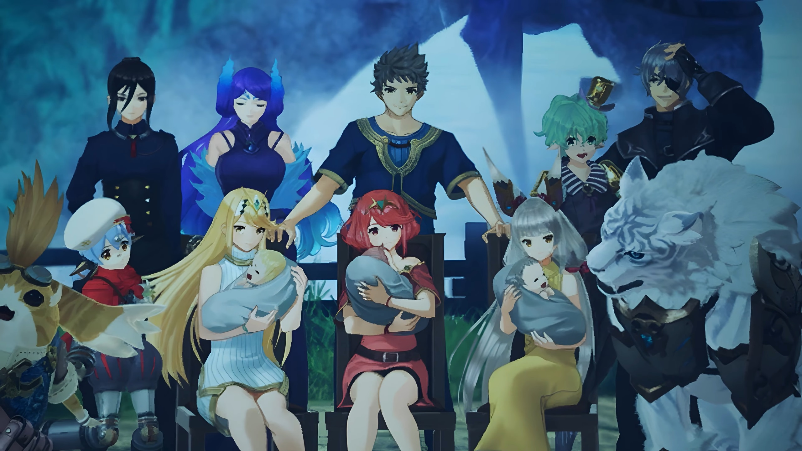

Postscript
This took much shorter time than translating Xenoblade 3. Perhaps because it is shorter on the whole, but also because one acquires a way of writing stuffs, for the good or the bad. Experiments still continued -- whenever one read about something, one changed one's style of writing. You already knew the book that influences how one wrote this book, as mentioned in the preface. Also, it took longer to write Xenoblade 3 because one was so attached to Mio one can't let her go so fast. One want to extend the time one was being with her. On the contrary, in this book, though one also felt an attachment for Pyra/Mythra, it wasn't as strong as with Mio. Perhaps it has something to do with the story being undercooked, like many players mentioned. Indeed, one agreed with expanding some of the parts, like Nia's story. In Xenoblade 3, we have a whole side story dedicated to tell the story of Mio -- the main event that changed her forever. One bet the developers realized that they need a side story to tell that out, after learning from Xenoblade 2 that they didn't expanded enough. Nia's story do took some time to buildup, but realized that the main buildup happened only after they enter the Spirit Crucible Elpys. The other times -- when she clenched her fist, refusing to use her power when Vandham died, and one forgot the others in between, then finally, saving Niall, then only the finale reveal. The writer seemed to took her in a single line, didn't expand much. If you read "Master and Man" in Leo Tolstoy, you know how Tolstoy loved to do that to peasants: chapter 4 to chapter 9 was extremely fascinating; but when it comes to the final chapter (10), it feels like "the peasant died. The end." Similarly, for Nia, we felt like "She was scared all along, and as time passes, she felt more scared -- and Rex told her to not feel scared, and she no longer feel scared. The end." It's less realistic, one thought -- the other factors in the cutscenes can be magical, but regarding psychology, it needs to fit more to how it works in real life. If you could change the thought of someone just by telling them not to do something, the world would be a simpler place. If people who went for psychotherapy would just listen to their psychotherapist, all would have a happy marriage, or a happy parenthood{{footnote: A couple that had problem go to a psychotherapy to fix the other partner, but who actually needs 'fixing' is themselves. Parents go to psychotherapy, bringing their child along, wanting them to fix their child, but who actually need fixing is the parents themselves -- they're the one who acts like that and causes their child to imitate. But no, parents refused to acknowledge their error, but they want to fix their child. Such folly.}}. But no, the world is a messier place than that.
When you read the book, you realizes one probably is a lesser writer (at least one says so, one don't know what you think). Reason is, a lesser writer report facts, which is easy to do, but a great writer make the same facts rich enough and turn it into a cause-and-effect story -- and that one's lacking in many aspects. One know one need to do that, but one don't know how to do that, at least not consciously. The story may be interesting per se, because one's just translating it -- but because one's a lesser writer, the translation also is more flawed than the original story told in the cutscenes. But what can one do? One's still learning, and one need to experiment more -- perhaps one day in decades one'll be able to write something that touches people's heart.
Xenoblade 3 is constantly emits a desolate mood -- its background is desolate. Xenoblade 2, however, written with the main characters as children rather than adults, they're allowed to act more childish. Not to say adults cannot act childish -- one sometimes do, despite people mocking one -- it's just that most people don't expect adults to be childish in our age. We should, you know, but we don't. Back to the background, when you can write more childishly, you can inject an extra (ultra large) dose of optimism to the characters. Sure, different people have different optimistic level. When one was a teen, around the age of Rex, one was much more pessimistic than him. And now, one's still a pessimistic person. In the story, Rex was more optimistic than any others. Pyra starts out with a constant desolation she acquired for 500 years. At times throughout the story, she fell back to the bouts of depression; though when she was with her friends, she was distracted, forgetting her internal melody for the moment. That actually happened to one, the process, so one can say it's mostly true. The only times the negative emanates are when you're sharing with them your internal melody, hoping someone would listen to you, and if they could be compassionate for you. You probably don't need fixing, just a pair of listening ears, and that works like a charm. Of course, it's hard to share something so personal -- and one bet Pyra felt the same. Though, her friends don't force her to open up (all except Tora whom cannot read emotions, the drawback of being too scientific/engineer-oriented), letting her took it easy. When she felt its time, before she died, she finally told Rex about it, their goal to go to Elysium. She opened up little by little when trust increases. But there are some things that she just can't speak it out even when trust is high -- some things are just so personal that you don't know, and one don't know, if speaking it will immediately crumble trust back to zero. Remember what Warren Buffett said, it take decades to build trust, and 5 minutes to take it down. That's true for business, and probably true for friends as well.{{footnote: Though there's one exception -- con artists knows exactly how to manipulate trust such that, when police and interrogators and some individuals were voicing out loud their doubts, they put so much stake in to the con artists their trust maintained for a very long time, even helped pay the money to bail out the con artist if necessary.}} Even adults like Amalthus, despite the despairing background he had, carries a lighter moment with her mom. Such complexity are easy to state as facts, but when one tries to write, it was a pain in the arse, and one don't believe one'd did a good job writing it out -- only a mundane one.
Before starting to write this book, one first tried to recall what moments one can remember when one first played the game 7 years ago. Indeed, one only remember the despairing moments, not only because they're the ones that carve strongly into one's memory, but also because pessimism is what one can remember more strongly than optimism. At least in the past, do one a good deed one might not remember, but do one a bad one, one never forget, whether or not one forgives. Sure, such memories aren't perfect -- indeed, when one rewatched, some of the memories one recalled seems to come out of nowhere -- an indication that my memories played trick on one, making a more neutral memory more sad from the constant desolation one felt over the decade, rewriting one's memories with such sadness. It was a surprise to one, the moments when they escape Gormott and Rex sat beside Pyra, looking at the flames when all others (except Nia) were asleep, and just enjoyed the tranquility together. Even though it had been shown once more in the ending credits, as it expanded out to the final moments, their returns, one had totally forgot about that moment's existence. Going back and watch it once more means now that one realizes the more optimistic part of the scene, now that one understand more about reading and writing, and felt more hopeful for humankind, and try to remember that part well. One cannot say one will not forget again, but at least for now, one'll remember. It's like the Great Books compiled by Mortimer Adler, and he mentioned it in "How to Read a Book", that a Great book, when you reread it again and again, you get different insights and different conclusions. One bet that Xenoblade stories are at least half a great book equivalent. The moral of the stories one may not always agree with, but for those whom one agree, or for the other players whom agreed with the morals of the story, it provides an enlightenment, an alternative way to live out our lives. We cannot teleport to Alrest and live their lives, but in our world, here on Earth, we can choose to live differently.
Babies forget why they cry when they were given toys. Children, when they get to play, normally also forget about the sad moments earlier, and they may not even recall if it's not deep enough! That is, provided there's something, some distraction for example, to distract them from continually falling in the vicious cycle, spiraling down to depression. It so happened to Rex, when he lost Pyra, he cheated himself that she'll be all right, and when Zeke's dad want to see him, he immediately forget about the slapping and the punches his friends hope to wake him up with. On the contrary, when Noah was being jailed and his friends tried to logically persuade him to get out, he cannot get out. Actually, his friends just can't take it why he don't just sit down, didn't really tried to up his spirit because, unlike these group where only Pyra lost her freedom, the group still could plan for a rescue scheme, Noah and the others were all imprisoned, so the average spirit, excluding Noah, was typically low. Nopons like Riku and Manana tend to exhibit a more optimistic outlook, even if they were to die they didn't emanate a gloomy wavelengths, but others were much more quiet, staying in their own inner mind, and Noah even worse -- he wished to reach out and couldn't. Even at the last moments, if not for Mio's comeback, Noah would not have felt glad.{{footnote: Such story isn't without a caveat, though. It shows how strongly a logical/rational person like Noah can feel. Anime being anime, they tend to emanate and amplify a feeling much more strongly than how real people acts. And real people can feel nothing even when they should feel something -- a rational/logical person should have emotions, unless you're a psychopath, but one had seen people feel strongly for their family getting hurt, yet felt as if it was just a text written on paper, a statistics amongst the many, when their friends died, and conclude, "They already lived enough. And that's OK." Or maybe it's just me, for one tend to feel much more strongly even for my classmate whom died as a young adult, relating to him/her as, what if one also die today, having the future flames snuffed out? What would (s)he had done differently, if (s)he knew (s)he's gonna die soon enough?}}
Actually, before Xenoblade 3 came out, one don't felt more strongly for it than the others, but availability bias played a trick on one's heart. Xenoblade 1 was probably just as strongly influenced my mind as 2 and 3 (but not X, which is more... one don't know how to say... than the emotional main stories). But because one last watched 3, and one'd already dimmed out one's memories (and feelings) of the earlier ones, one felt much more strongly for it. Though, even now, one can't admit that one might feel about equally strong for all 3 -- my mind kept telling me that one felt most strongly for 3 because of Mio, and how one hoped Noah being more emotional than he really is, despite one rationally told oneself otherwise.
What fears do you carry? Nia carried the fear of her past, afraid of revealing her true identity, afraid of being talked behind her back, afraid of the Praetorium. Pyra and Mythra carried the fear of their powers, afraid that no one would stood by their side, that they were lonely by themselves, that they bear burden for what secrets they held. It rings true, because one, too, had fears. Fears that one's not willing to speak out, not even to one's friends, for fear of being abandoned. Smaller fears included fear of getting out of one's comfort zone, acquired from my mom by living too long with her, her fear. What about you? What are your fears? Your fears that hold you back?
7 years ago, when one first watched Xenoblade 2, there were things one felt different back then than now. One was Jin. Actually, one was so putting oneself into Rex's shoes, and one was so envious at that time, that when Jin hugged Pyra (took her into custody) and Mythra (when she helped him blocked Amalthus attacks) one's mind was so focused on rage -- how dare you hug my Pyra/Mythra! 7 years later, when one watched it back, the jealousy had dimmed to nothingness, and one could finally watched them from a 3rd person point of view, feeling not empathy but compassion. What she had done for him; what he had did in his final moments.
There's a poem one took from chapter XI of Joys and Sorrows: by Pablo Casals as told to Albert E. Kahn that one wanted to share,
O friends, friends, no more of those sad tones!
Instead, let us all raise our voices
In a joyful song!...Praise to Joy, daughter of Elysium,
Born of God!
Goddess, merging love and laughter,
To thy shrine we come!
By this magic is united
What the harsh past held apart.
All mankind are sworn brothers
Where the gentle wings abide!
The ending part was really, really difficult to write. How could words explain emotions so strongly? Videos tend to appeal to multiple sources of your sensory, particularly visual and audio, but also words if you turn on subtitles; but with a book, one only have words to play with. One isn't Leo Tolstoy, whom could write the heart-breaking "Master and Man" that one could never forget its Chapter IV to IX. There were also some novels one read before, like 2 of the Chinese novels, that really enlightened one by the actions the characters made. And one of them, the author said to its reader, the author can do nothing to the characters because they had acted out on their own accord, and he could not control them -- they asked him to write them down like how they would. For one, one's translating, and translating means the story is already set. Sure, one had limited vocabulary and adjectives to explain what one want to write; but one do have one less degree of freedom -- the freedom to create the story. When one do, one expressed the inner thinkings based on one's own creativity, and they might not be really what the characters were thinking. Really, you had to ask the original author, what the characters were telling them to write about them, not one. One don't know.
And so, we have a far less than perfect scene unfolding in the finale. One could only assure you to do better than earlier works one'd translated, but one couldn't assure you they were the best one could do. After all, one's always learning, and in the future, one might decide to write it differently than one would've written now. Also, if one is to write the perfect based on the state one's in now, it would take lots and lots of revision, and one don't know if one's willing to do that, nor do one know if such revisions would deviate the story into another that's no longer a translation but an original, alternative history to be played out. Or you can just say one's lazy, depends on you. One'll give what one can, in one's limits.
Sometimes, one really think what words Pyra and Mythra speaks in both situation. Different people gave different opinions, but the author had decided to let you have the say, to let you put up with an ending you desired to. As for one...
SPOILERS AHEAD!!!
..., one was reminded by what Mio told Noah in Xenoblade 3 during her homecoming in the earlier book one'd translated. "It's been fun, Noah!" When Addam asked Pyra/Mythra, "So, tell me... How was it, being alive?" One think she felt similarly like Mio did. She might just have felt, "It's been fun!"
As for the final scene, what Rex really wanted to know was, was these the Pyra and Mythra he knows that came back, or were they new entity, like Brighid, whom no longer remembers what happened 500 years ago, only depended on the cold lines written on her diary, but she felt nothing reading the moving text describing her previous drivers? And they probably know he wanted to know if they were his lovers, and so she might went on to tell him, "Nice to meet you, Rex!" Or perhaps, "Long time no see, Rex!"
When a touching story completes, one's heart always fell, the hollowness and emptiness at the lack of future they had. One can look back and watch it again, but how one wished to walked another journey, and more journeys, with the same characters, again and again, until we know each other deep, accompany each other down the road that leads to the foggy futures ahead. Plunging back to reality, one remember the lack of friends one had to go on an adventure like Pyra and Rex with me, and the gap between expectations and reality grew so large nothing can fill the hollowness, so one pursued another after another stories, hoping to fill the hollowness, to no avail. Bad stories are addictive, but they wear one out. Great stories, on the other hand, sew up the hollowness when it unfolds, ripped it apart yet again when it ends, and now it's larger, the hollow gap between two great stories lying side by side. The first might have gotten smaller with time, so the gap don't grow endlessly; but at the very least, they remain huge. And great stories are rare. There's no confirm one can find another to fill the hollowness of one's heart, at least not after this one. The next coming up, "Torna, the Golden Country," will be short, too short to unfold something as dramatic as this main story's buildup. Perhaps one might write a story of one's own, and perhaps, that, one'll have an extra degree of freedom, though one still cannot write something as great as "Master and Man."
And if you really felt empty right now, like most of us whom felt so when we played the game, it was 5 years before our emptiness was relieved. Exactly what happened to Rex and Pyra and Mythra after that we don't know, but there's a picture in Xenoblade 3 that eased most of our broken hearts, after 5 years of waiting; and one'll freed you from the chains of 5 years, if you will allow one, to open up the spoiler alert below to display the picture you so wished to quench the ticklishness in your heart. Go ahead, and click. But before that, what do you think happened to them? How will Rex looked in the future?
SPOILERS ALERT!!! (Image)

Donations and Support:
One does not receive money for this work, and feel free to support one's work at the following addresses:
- NEAR Protocol: wabinab.near
- ETH, OP, BNB: 0xa32e05D545FEc9cADb46BEB0839E3Ac0A9E39d9B
- BTC: 1Gp2bnMk73LUwTRo8bPUimeWbztAR9DViU
- BCH: qzv2w8f8nn3jzudnescpha0s46fvha6lpgrlfh2t67
- Polygon MATIC: 0xCD9a17ae05D4C985fA6C8603e8a5215650F9a584